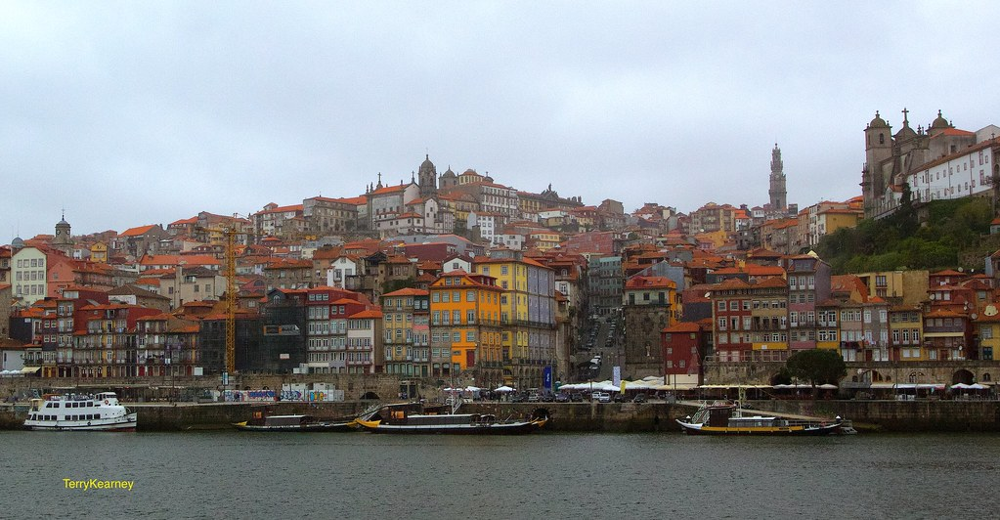
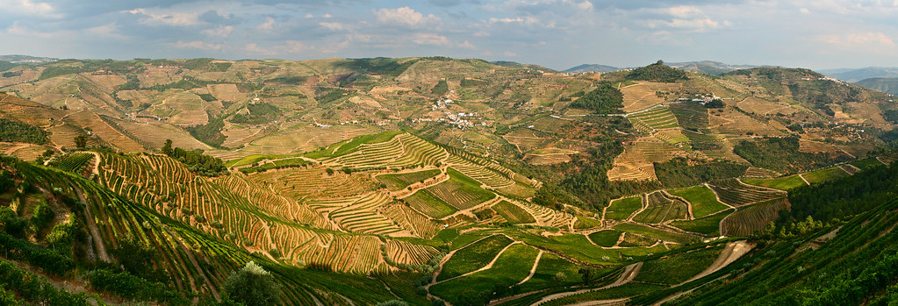
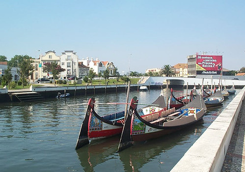
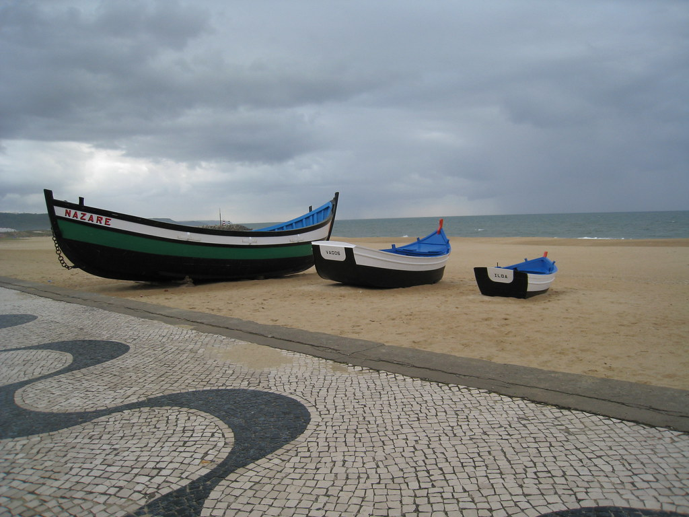
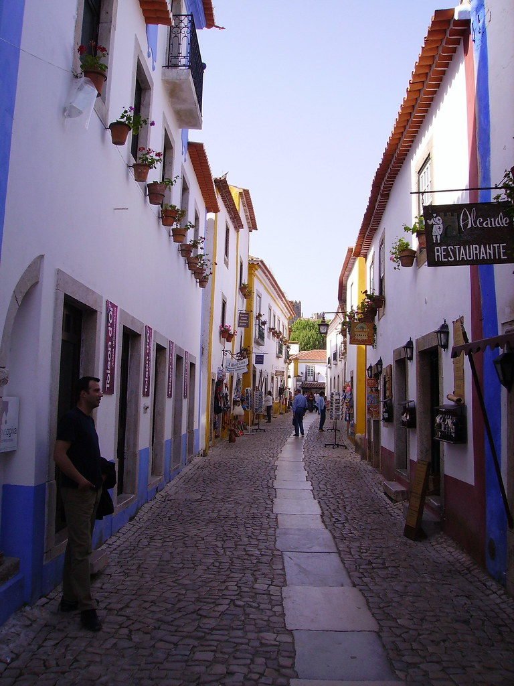
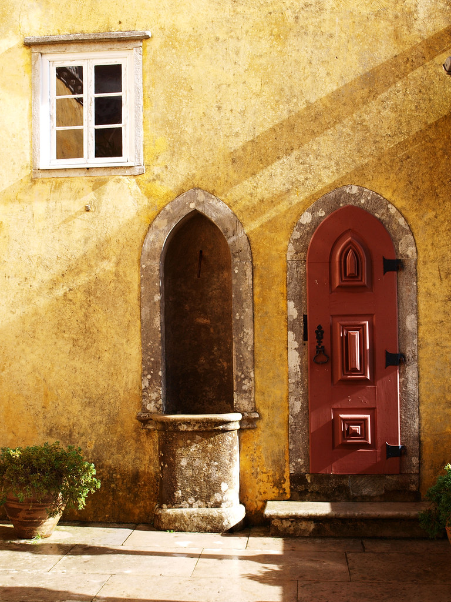

Ontdek het echte Portugal — van portwijnen tot paleizen
Een zorgvuldig samengestelde route langs historische steden, wilde kustlijnen, UNESCO-erfgoedplaatsen en verborgen pareltjes. Inclusief directe Google Maps-links en reserveringsopties per attractie.
Van de charmante straten van Porto tot de levendige hoofdstad Lissabon
Welkom in Portugal! Deze interactieve route voert je langs de mooiste bestemmingen van het land. Je begint in Porto, een stad doordrenkt van geschiedenis en thuisbasis van de beroemdste portwijn ter wereld. Van daaruit trek je door de terrasvormige wijnbergen van de Douro-vallei, ontdek je kleurrijke kuststadjes, verken je middeleeuwse vestingsteden, bezoek je romantische bergpaleizen in mistig Sintra en sluit je af in het bruisende Lissabon.
Elke dag heeft directe Google Maps-links voor navigatie, officiële websitelinks voor reserveringen en tips voor de beste bezienswaardigheden, eetgelegenheden en fotomomenten.
Porto → Douro → Aveiro → Nazaré → Óbidos → Sintra → Lissabon · ±500 km
Kleinere gouden stippen = tussenstops onderweg (Alcobaça op dag 6, Mafra op dag 8) — geen overnachting.
Vluchten, data en handige gegevens voor onderweg
Vluchttijden zijn de geplande tijden. Klik op Live status voor actuele vertrek-, gate- en vertragingsinfo (opent Flightradar24).
Klik op een dag voor alle details, tips en reserveringslinks
📅 Download volledige reis als agenda (.ics)

Dag 1–2 · zo 6–ma 7 sep
Dag 3–4 · di 8–wo 9 sep
Dag 5 · do 10 sep
Dag 6 · vr 11 sep
Dag 6–7 · vr 11–za 12 sep
Dag 8 · zo 13 sep · dagtripAlle attracties, tips en navigatielinks per dag
Portwijn & Literaire Magie
Porto is een stad van contrasten: vervallen azulejos naast hipster koffiebars, eeuwenoude portwijnkelders naast moderne gastronomie. De Ribeira-wijk, geklasseerd als UNESCO-erfgoed, is het hart van de stad. Pak een boot over de Douro naar Vila Nova de Gaia voor de meest indrukwekkende panorama's.
Een privétour van circa 3 uur door het eeuwenoude centrum van Porto, in het Nederlands en op jullie eigen tempo — aanpassingen zijn altijd mogelijk. De tour brengt je door middeleeuwse straten en steegjes langs de Douro, met verhalen over de rabelo-boten die vroeger de vaten portwijn vervoerden. Prijzen: €110 (1-2 pers.), €150 (3-4 pers.), €37,50 p.p. bij >4 personen. Reserveer vooraf via e-mail, telefoon of WhatsApp.
Een van 's werelds mooiste boekhandels. Het adembenemende Art Deco-interieur uit 1900 met zijn iconische rode wenteltrap inspireert naar verluidt J.K. Rowling bij Harry Potter. Reserveer online — er is een entreebijdrage die verrekend wordt met een aankoop.
Het enige grote porthuis dat door zijn hele geschiedenis volledig Portugees is gebleven — door lokale gidsen het vaakst aanbevolen als je er maar één wilt doen. Opgericht in 1751, met het verhaal van Dona Antónia Adelaide Ferreira, een legendarische zakenvrouw die het bedrijf in 1844 in een mannenwereld overnam en tot een van de grote porthuizen uitbouwde. De rondleiding door de kelders eindigt met een proeverij; ligt aan de rivier in Gaia, geen heuvel op.
De iconische dubbellaagse metalen brug (ontworpen door Théophile Seyrig, leerling van Eiffel) verbindt Porto met Gaia. Loop over het bovendek voor het beste panorama. De Ribeira-wijk eronder is UNESCO-erfgoed en bruist 's avonds van terrassen en fado.
Indrukwekkende 19e-eeuwse voormalige beurszaal, gebouwd door Porto's kooplieden. De absolute blikvanger is de Arabische Zaal — een weelderig vergulde ruimte geïnspireerd op het Alhambra in Granada, waar nog altijd staatsbezoeken worden ontvangen. Alleen te bezoeken met een rondleiding (30–45 min).
Wijnterrassen & Romantiek
De Douro-vallei is een van Europa's meest spectaculaire wijnstreken. Eeuwenoude stenen terrassen cascaderen langs onmogelijk steile hellingen, bewerkt voor meer dan 2.000 jaar. Dit landschap is pure romantiek — eindeloze druivenranken, traditionele quinta-landhuizen, riviercruises en wereldklasse wijnervaringen.
Authentieke, intieme wijnervaring bij een Nederlandse familie die al sinds 1842 wijn en port maakt — Dirk van der Niepoort geldt als grondlegger van de moderne Douro. De Quinta de Nápoles ligt midden in de wijnbergen (tussen Régua en Pinhão). Bezoekers roemen juist het persoonlijke, exclusieve karakter — geen toeristische massa-lodge, maar een echte proeverij op de quinta, vaak met een huisgemaakte lunch op het terras. Reserveer ruim vooraf; bezoek is alleen op afspraak.
Een van de meest prestigieuze quintas van de Douro-vallei. Het panoramaterras kijkt uit over eindeloze wijngaarden. Professionele sommeliers begeleiden proeverijen van premium Douro-rode wijnen, witte wijnen en rosés.
Glijdt langs terrasvormige wijngaarden op waterniveau. Veel tochten bevatten lunch en wijntjes. Een rustgevende, romantische ervaring langs werkende quintas. Ideaal in de ochtend voor het mooiste licht.
Charmante heuveltjesstad met traditionele Portugese architectuur. Het beroemde barokke heiligdom Nossa Senhora dos Remédios heeft 686 stenen traptreden met spectaculair panoramisch uitzicht over de vallei.
Het historische handelscentrum van de Douro-wijnstreek, waar vroeger de rabelo-boten met vaten port de rivier af voeren naar Porto. Het Museu do Douro, gevestigd in een oud douanegebouw aan de rivier, vertelt de geschiedenis van de wijnstreek en de aanleg van de terrassen. Leuke, compacte stop tussen twee wijnproeverijen door.
Art Nouveau & Kleurrijke Kust
Aveiro wordt het Venetië van Portugal genoemd, met schilderachtige grachten bevaren door traditionele moliceiro-boten met kleurrijke boegprenten. De stad is ook bekend voor haar prachtige Art Nouveau-architectuur. Op 10 minuten rijden ligt Costa Nova met de beroemde gestreepte visserhuisjes.
Glijd in een traditionele beschilderde boot door de grachten van Aveiro. Duurt ca. 45 minuten en biedt het mooiste uitzicht op de Art Nouveau-gevels.
Kleurrijke gestreepte vissershuisjes langs de Atlantische kust. Een van de meest gefotografeerde plekken van Portugal, en terecht. Kom vroeg voor weinig volk.
Historische porseleinfabriek, opgericht in 1824 en het oudste nog actieve porseleinmerk van de Iberische wijnstreek. Het museum toont eeuwenoude stukken en de fabrieksrondleiding laat zien hoe het porselein nog steeds grotendeels met de hand wordt beschilderd. De outlet-winkel is populair voor mooie, betaalbare stukken.
Geschiedenis & Oceaangeweld
Combineer de indrukwekkende gotische architectuur van het Klooster van Batalha (1385, UNESCO) met het rustiger gelegen Klooster van Alcobaça — Portugal's grootste kerk en het eerste puur gotische bouwwerk van het land — vlak onderweg naar Nazaré. Sluit af met de dramatische kliffen en reuzengolven van Nazaré. Het Farol-vuurtoren uitkijkpunt biedt de meest spectaculaire uitzichten op zee.
UNESCO Werelderfgoed met gotisch-manueline architectuur. Gebouwd om de overwinning bij de Slag van Aljubarrota (1385) te vieren. De Kapel der Onvoltooiden is een meesterwerk.
Korte tussenstop tussen Batalha en Nazaré (~15-20 min rijden vanaf Batalha, geen omweg). Dit UNESCO-klooster uit 1153 is de grootste kerk van Portugal en een van de belangrijkste middeleeuwse bouwwerken van het land — indrukwekkend door zijn kale, statige eenvoud in plaats van overdadige versiering. Bekend van de tragische liefdesgeschiedenis van Pedro en Inês, wier graftombes hier tegenover elkaar staan. Rustiger dan Batalha, minder toeristische drukte, en zeker de moeite waard als korte stop onderweg.
Het hoog gelegen deel van Nazaré met de beroemde Farol-vuurtoren, van waaruit de beroemde XXL-golven worden gesurft (tot 30 meter hoog in de winter). Het kabeltje brengt je omhoog.
Prachtig gerestaureerd middeleeuws kasteel hoog op een heuvel boven de stad Leiria, met een fraai uitzicht over de rivier Lis en de daken van de stad. Leiria ligt praktisch naast Batalha (~10 min rijden), dus dit is een stop zonder enige omweg als er tussen de twee kloosters en Nazaré nog tijd over is.
Middeleeuws Sprookje
Óbidos is een volledig bewaarde middeleeuwse stad omringd door imposante vestingmuren. Witte huisjes met blauwe en gele randen, bougainvillea's, kasseienstraatjes — een van Portugal's mooiste dorpjes. Proef de ginjinha (kerslikeur) uit een chocoladebeker.
Loop de volledige rondgang over de middeleeuwse muren voor panoramisch uitzicht. Het kasteel (nu een luxe pousada) is van buiten te bewonderen.
Levendige marktstad op zo'n 15 minuten van Óbidos, met een heel ander karakter: minder toeristisch, meer lokaal leven. Beroemd om zijn aardewerk, met name de excentrieke groente- en dierfiguren van Bordallo Pinheiro. De dagelijkse markt bij het Praça da República is de moeite waard, net als het park Parque Dom Carlos I.
Paleizen & Mystiek (dagtrip)
Onderweg van Óbidos naar Sintra ligt Mafra vrijwel exact halverwege — een natuurlijke tussenstop, geen omweg. Daarna gaat de reis verder naar Sintra, een UNESCO-werelderfgoedstad waar sprookjespaleizen uit de mist rijzen tussen eeuwenoude dennenbossen. Palácio da Pena met zijn felle kleuren, de raadselachtige Quinta da Regaleira met zijn initiatie-put, en de Moorse kastelen zijn elk apart een dag waard. Sintra wordt als dagtrip bezocht op weg naar Lissabon — geen overnachting.
Deze dag is vol: Mafra volwaardig bezoeken (bibliotheek + rondleiding) laat weinig tijd over voor Sintra, waar Pena en Regaleira normaal elk al 2–3 uur vragen. Kies daarom pas 's ochtends, afhankelijk van hoe vroeg je uit Óbidos vertrekt en hoe het weer in Sintra is:
Mafra alleen van buiten bekijken (15–20 min foto-stop op het plein, geen ticket). Je houdt een volledige middag over voor Sintra: Palácio da Pena + Quinta da Regaleira, zonder haasten.
⏱ Mafra: 15–20 min ✅ Beide Sintra-paleizen goed te doenMafra volwaardig bezoeken inclusief de bibliotheek (1–1,5 uur). In Sintra dan focussen op één hoogtepunt: Palácio da Pena. Regaleira en Cabo da Roca worden dan "als er tijd over is".
⏱ Mafra: 1–1,5 uur ⚠️ Sintra beperkt tot 1 paleisEen van de grootste en meest ambitieuze bouwwerken van Portugal: paleis, klooster, basiliek en één van de grootste bibliotheken van Europa in één complex, gebouwd in de 18e eeuw onder koning João V naar Italiaans voorbeeld. Vaak onderschat doordat het minder bekend is dan Sintra, maar minstens zo indrukwekkend qua schaal — de bibliotheek met zijn 36.000 boeken (en de vleermuizen die 's nachts de boeken beschermen tegen insecten) is een absoluut hoogtepunt. Ligt vrijwel exact op de route tussen Óbidos en Sintra, dus een logische tussenstop zonder omweg. Bij optie A: alleen het exterieur bekijken vanaf het plein, geen ticket nodig.
Het meest kleurrijke paleis van Portugal, hoog boven Sintra. Romantisch neo-manueline architectuur in felle geel, rood en terracottakleuren. Reserveer online — het is razend populair.
Een mysterieus landgoed vol symbolen van de vrijmetselarij en rozenkruisers. De beroemde initiatie-put (een spiraalvormige trap naar de onderwereld) is iconisch en uiterst fotogeniek. Bij optie B (Mafra volwaardig) is dit de eerste die sneuvelt als de tijd krap wordt.
Het meest westelijke punt van het Europese vasteland — dramatische kliffen van 140 meter hoog die recht in de Atlantische Oceaan vallen, met een iconische vuurtoren. Op ~20 minuten van Sintra, maar wel een kleine omweg (heen én terug), dus alleen inplannen als Pena en Regaleira niet de hele dag vullen.
Tijdperk van Ontdekkingen
Lissabon, de oudste hoofdstad van West-Europa, spreidt zich uit over zeven heuvels langs de Taag. Van de historische Toren van Belém tot de kleurrijke straatjes van Alfama, van het ratelen van tram 28 tot de zoete geur van pastéis — Lissabon is onvergetelijk.
Het iconische manueline monument aan de Taag, symbool van Portugal's gloriejaren van ontdekkingen. Combineer met het nabijgelegen Monument der Ontdekkingen.
De originele pastel de nata, gebakken volgens een geheim recept uit 1837. Geniet van verse, warme custardtaartjes met poedersuiker en kaneel direct aan de toonbank. De rij is de wacht waard.
Stap op de legendarische gele tram door de steile straatjes van Alfama, de oudste wijk van Lissabon. Eindig bij Miradouro da Graça voor het beste panorama bij zonsondergang.
Nederlandse gids die sinds 2013 in Lissabon woont en zich er thuis voelt — de nadruk ligt op verbinding met de stad én met elkaar, geen standaard toeristenroute. Naast stadstours ook food- en zeiltours mogelijk. Neem contact op per e-mail om interesse en een tijdstip af te stemmen.
Altijd privé en op jullie eigen tempo, niet alleen langs de highlights maar ook langs minder bezochte plekjes. Wandelend, fietsend, of een combinatie — Gino biedt ook een aparte tour naar Sintra vanuit Lissabon aan. Wandeltour "Lissabon te voet: Chiado, Baixa & Alfama" vanaf €20 p.p., Sintra-hike vanaf €20 p.p.
Geen wandeling maar een ±3,5 uur durende fietstour met een Nederlandse gids die al jaren in Lissabon woont, langs de grote bezienswaardigheden van het centrum tot Belém (bergafwaarts). Onderweg een pauze met Ginja en pastéis de nata. Leuk alternatief als een dag minder te voet wenselijk is. Groepstour vanaf ~€32,50 p.p.; privétour ook mogelijk. Reserveren verplicht (online, telefonisch, of via WhatsApp) — betalen kan pas ter plekke.
Voormalig industrieterrein onder de 25 de Abril-brug, omgetoverd tot creatieve wijk vol conceptwinkels, galerieën, street art en gezellige cafés — waaronder de beroemde boekhandel Ler Devagar in een oude drukkerijhal. Een heel andere sfeer dan het historische centrum, goed te combineren met Belém (dezelfde kant van de stad).
Het 110 meter hoge Christusbeeld aan de overkant van de Taag, geïnspireerd op de Christus de Redentor in Rio de Janeiro. Het uitkijkplatform aan de voet van het beeld biedt een van de beste panorama's op Lissabon, de 25 de Abril-brug en de rivier. Bereikbaar per veerboot vanaf Cais do Sodré plus een korte bus, of met de auto.
Alles wat je moet weten voor een vlotte reis
April–mei: Ideaal — 18–24°C, bloemen, weinig volk.
Sept–okt: Warm 20–26°C, zonnig, uitstekend.
Juni–aug: Heet 25–32°C, hoogseizoen, druk.
Nov–mrt: Frisser, soms regen, rustig en goedkoop.
Huurauto: €30–50/dag, compacte auto is ruim voldoende
Wegen: Goed onderhouden, rijden rechts
Snelheid: 50 stad · 90 regionaal · 120 snelweg
Navigatie: Google Maps offline downloaden
Tolwegen (Via Verde): Veel snelwegen (A-wegen) zijn elektronisch
tolwegen zonder tolpoortjes — vraag bij de verhuurder om een Via Verde-transponder
of tolpakket, anders volgt een boete achteraf via kentekenherkenning.
Parkeren steden: Porto, Aveiro en Lissabon hebben betaald parkeren
in het centrum; Óbidos en Sintra hebben parkeerterreinen net buiten de kern —
binnen de muren/oude centra mag vaak niet geparkeerd worden.
Tip: Reserveer een parkeerplek bij je hotel waar mogelijk (Óbidos,
Sintra-dagtrip, Lissabon).
Reisverzekering: Controleer dekking voor huurauto-schade,
medische kosten en bagage — een Europese zorgverzekeringskaart (EHIC/Europese
zorgpas) dekt alleen basiszorg, geen repatriëring.
Rijbewijs: Nederlands rijbewijs is geldig in Portugal, geen
internationaal rijbewijs nodig.
ID: Geldig paspoort of ID-kaart (Portugal is Schengen-lid).
Kopieën: Maak digitale foto's van paspoort, rijbewijs en
verzekeringspolis voor onderweg.
Algemeen alarmnummer: 112 (politie, ambulance, brandweer —
zelfde als in Nederland)
Pech onderweg: Bel het pechhulpnummer van de verhuurder
(staat op het huurcontract)
Ziekenhuizen met spoedeisende hulp: Hospital de Santo António
(Porto), Hospital Distrital de Aveiro, Hospital de Santa Maria (Lissabon)
Nederlandse ambassade: Den Haag-desk bereikbaar via
+351 21 391 4900 (Lissabon) voor paspoortverlies of ernstige nood
Portwijn: Proeverijen in Porto/Gaia
Douro-wijnen: In de quintas
Zeevruchten: Aveiro en de kust
Ginjinha: Kerslikeur in Óbidos
Pastéis de nata: Overal, best in Belém
Gouden uur: 1 uur voor/na zonsopkomst/ondergang
Must-shots: Dom Luís-brug, Douro-terrassen,
Costa Nova, Pena Paleis, Miradouro Graça
Tipp: Statiefje mee voor avondopnames
Verblijf: €60–120/nacht (midden)
Eten: €15–30/persoon
Attracties: Meeste €5–15
Benzine: ~€1,80/liter
Tolwegen: Via Verde aanbevolen
Per attractie vind je directe links naar:
🗺️ Google Maps — Navigatie & routebeschrijving
🌐 Officiële websites — Info & reserveringen
📧 Boa viagem! — Goede reis!
Weer: 20–26°C overdag, koeler 's avonds (~15°C) — laagjes kleding
Schoeisel: Comfortabele wandelschoenen (kasseien in Porto,
Óbidos en Sintra) + iets voor 's avonds
Mee: Lichte regenjas (kans op buien), zonnebrand, adapter
niet nodig (type F, zelfde als NL)
Douro-vallei: Kan overdag warmer zijn dan de kust — extra
zonbescherming voor wijnproeverijen buiten